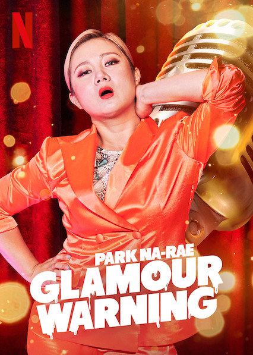

Park Na Rae Completes Second Police Probe In Alleged Workplace Abuse Case, Issues Apology

One of South Korea's most beloved comedians found herself at the center of controversy this week. Park Na Rae, the 40-year-old entertainer known for her quick wit and numerous variety show appearances, completed her second round of police questioning on March 20, 2026, regarding allegations of workplace abuse raised by former managers.
Arriving at the Seoul Central Police Station at approximately 1 PM KST, Park faced reporters briefly before entering for approximately three hours of questioning. Upon exiting, she issued a public apology for the "confusion and disappointment" caused by the ongoing controversy, while maintaining that she would cooperate fully with the investigation.
The Allegations
The case stems from complaints filed by multiple individuals who previously worked as managers or staff members for Park Na Rae. According to statements provided to police, the former employees allege patterns of behavior they characterize as "power abuse," including verbal harassment, unreasonable work demands, and instances of what they describe as emotional manipulation.
Specific allegations have not been made fully public, but media reports indicate they involve claims of late-night calls demanding immediate responses, criticism that crossed into personal attacks, and treatment that allegedly left staff members feeling psychologically damaged.
"Working for her was one of the most difficult experiences of my life," said one anonymous former staff member in a statement released through their legal representative. "The public sees her cheerful TV personality, but behind the scenes, it was a completely different story."
Park Na Rae's Response
Through her agency and legal team, Park Na Rae has consistently denied the more serious allegations while acknowledging that workplace relationships can sometimes become strained. In her statement following the police questioning, she struck a careful balance between defense and contrition.
"First, I want to sincerely apologize to everyone who has been worried or disappointed by this situation," she said to assembled media. "I have deep respect for those who worked with me over the years, and I am truly sorry if any of my actions or words caused them pain."
"However, I want to be clear that some of the allegations that have been reported do not reflect what actually happened. I will continue to cooperate with the investigation so that the truth can be revealed. Thank you for your patience."
Her legal representative added that Park would be providing evidence and witness statements to support her account of events during the investigation process.
The "Gapjil" Context
The allegations against Park Na Rae occur against the backdrop of South Korea's ongoing reckoning with "gapjil"—a term describing the abuse of power by those in superior positions. In recent years, numerous high-profile cases have brought attention to workplace bullying in Korean society, from corporate executives to entertainment industry figures.
The entertainment industry has faced particular scrutiny, with the hierarchical nature of celebrity-staff relationships creating conditions where abuse can potentially flourish. Managers and assistants often work extremely long hours, are expected to be available at all times, and may feel unable to complain due to the power imbalance.
"The relationship between celebrities and their staff is inherently unequal," explained Dr. Jung Min-soo, a labor rights advocate. "When complaints do emerge, they often reveal systemic problems rather than individual bad actors. Whether or not specific allegations are true, these cases highlight the need for better workplace protections in the entertainment industry."
Additional Controversy
Complicating the situation, reports have emerged regarding a separate dispute over medical procedures. According to some accounts, a former manager alleges being required to undergo medical treatments at facilities connected to Park Na Rae's business interests, raising questions about potential conflicts of interest.
The details of this aspect of the case remain unclear, and Park's representatives have not specifically addressed these claims. Police are reportedly investigating whether any regulations were violated in connection with these arrangements.
Career Impact
Park Na Rae has been a fixture of Korean variety television for over a decade, known for appearances on popular shows and her status as one of the country's top female comedians. Her candid personality and relatable humor have earned her a substantial fanbase and numerous advertising contracts.
The ongoing investigation has already affected her professional activities. Several scheduled appearances have been postponed, and at least one brand has reportedly paused their endorsement relationship pending the investigation's outcome.
Entertainment industry observers note that public figures accused of workplace abuse have faced varied consequences in South Korea, ranging from temporary career interruptions to permanent damage, depending on investigation outcomes and public perception.
Fan and Public Reactions
Public opinion has been divided. Many longtime fans have expressed support for Park, noting her generally positive public image and questioning the timing and motivation of the allegations. "She has always seemed like a genuinely kind person," wrote one supporter. "I'll wait for the investigation results before judging."
Others have taken a more critical stance, arguing that the public should take workplace abuse allegations seriously regardless of the accused person's celebrity status. "We need to listen to the workers' voices," wrote one commenter on a popular forum. "Too often, powerful people get away with mistreatment because the victims aren't believed."
Online discussions have become heated, with accusations of bias flying in both directions—some claiming anti-celebrity witch hunts, others alleging that fans are blindly defending their favorite.
Legal Process Ahead
The police investigation is expected to continue for several more weeks before a decision is made on whether to forward the case to prosecutors. If charges are eventually filed, Park Na Rae would face trial in what would become one of the higher-profile workplace abuse cases in recent Korean entertainment history.
Legal experts note that workplace abuse cases can be difficult to prove, as they often involve subjective interpretations of behavior and rely heavily on testimony. The investigation will likely examine documentation, witness accounts from multiple perspectives, and any recorded evidence that may exist.
For now, Park Na Rae has not been formally charged with any crime. Under Korean law, she is presumed innocent unless proven guilty, and the investigation process is ongoing.
A Broader Conversation
Regardless of the case's outcome, the allegations against Park Na Rae have contributed to ongoing conversations about power dynamics and workplace treatment in the Korean entertainment industry. Worker protection advocates have called for industry-wide reforms, including better complaint mechanisms and third-party oversight.
"Every time one of these cases emerges, we hear calls for change, but the fundamental structures remain the same," said labor lawyer Kim Hyun-ji. "Real reform requires not just punishing individual bad actors but changing the systems that enable abuse."
As the investigation proceeds, all parties have called for patience and for conclusions to be based on evidence rather than speculation. The truth, whatever it may be, will ultimately be determined through the legal process.
This story will be updated as the investigation develops.